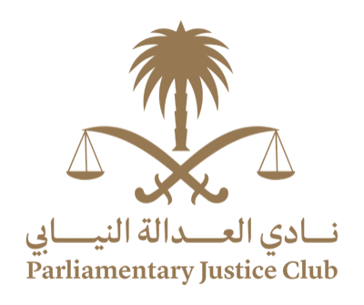

نادي العدالة النيابي
نوعي، نمكّن، نُحدث فرقًا
⌄
إدارة النادي
الهيكل القيادي
لمحة سريعة عن المناصب القيادية الأساسية. للتفاصيل الكاملة، تفضل بزيارة صفحة «من نحن».
ررئيس الناديمعن بن علي الشمري
ننائبة الرئيسجود بنت غازي المطيري
ننائب الرئيسسعود بن فهد الدحيلان